“I want the technology to just work.”
Tools that fit the way you already work, built quickly and tested on real tasks. Not a demo that falls apart on Monday.
See working tools →MARC KROLL · AI FOR SMALL BUSINESSES, TEAMS AND CREATORS
I’ve put AI into production at enterprise scale, on records that must never leak. Now I bring the same tools and know-how to smaller teams: running on your own computers, set up in days confirm, and taught so your people actually use them.
HI, I’M MARC KROLL · VIENNA
Hands-on workshops and tools that run locally, from someone who has shipped AI where compliance isn’t optional. For businesses in Austria, Germany and Switzerland that want the benefits without the risk.
PRIVATE AI, BUILT AND TAUGHT BY MARC KROLL
Transcribe interviews, clean up recordings, draft text and run your own models, offline and with nothing uploaded. I build these tools from enterprise experience, and I teach teams to use them.
 Marc Kroll · AI Product Manager · Vienna · German & English
Marc Kroll · AI Product Manager · Vienna · German & English
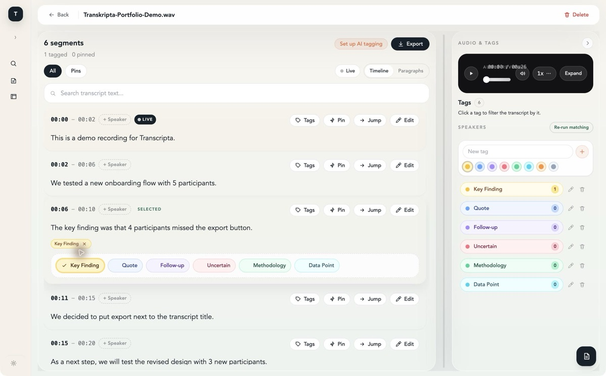
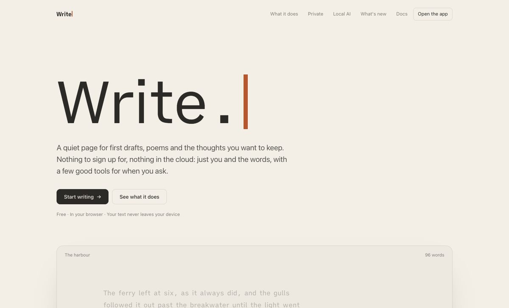
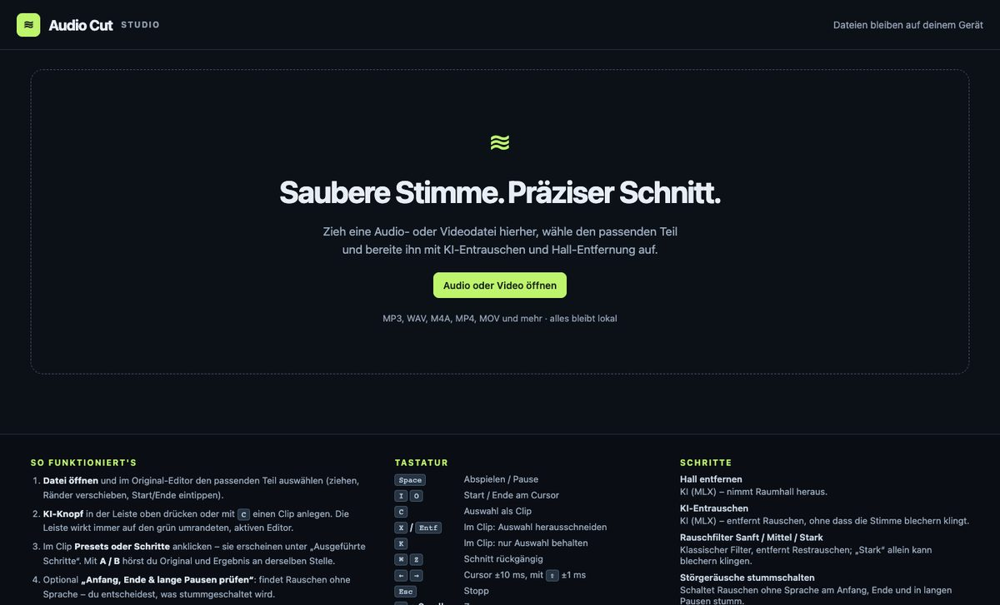
WHAT CLIENTS TELL ME
Compliance, data protection, legal or a competitive edge:
if it matters where your data goes, start here.
“I want the technology to just work.”
Tools that fit the way you already work, built quickly and tested on real tasks. Not a demo that falls apart on Monday.
See working tools →“Our data can’t end up somewhere.”
Your files are processed in the browser or on your Mac, not uploaded to a stranger’s server or used to train someone else’s model. Local models when you want them.
Tools that keep data local →“I want my team to actually use AI.”
Hands-on workshops in German and English for people without an IT background. Everyone leaves with something they built themselves.
Workshops & talks →“We’re falling behind.”
I’ve seen what large companies run in production. I bring what works to smaller teams, at the speed a small team can move.
Tell me where you are ↗BRING YOUR OWN AI
Most of my tools work without the internet. Connect your own model, or let it run locally: Whisper, Ollama, llama.cpp, MLX, Kokoro, Apple Vision. Model logos could go here
TOOLS YOU CAN USE TODAY
Each tool says where your data goes.
Most of the time: nowhere.
YOUR FILES STAY WITH YOU
For anyone handling text, audio or recordings that shouldn’t leave the building.
A quiet page for first drafts and poems. Versions of a passage side by side, notes in the margin, synonyms, a local AI when you ask for one, and pictures of your words to share. No account, and your text never leaves the browser.
Cut voice recordings precisely and get them ready for a voice clone: pick the part on the waveform, then remove noise and reverb, boost the voice and compare before and after. Files stay on your device.
Recordings become research material. Drop in an interview, get a searchable transcript on your Mac, jump from any passage to its audio and tag the quotes and findings. Transcription runs offline; AI tagging is optional and can stay local too.
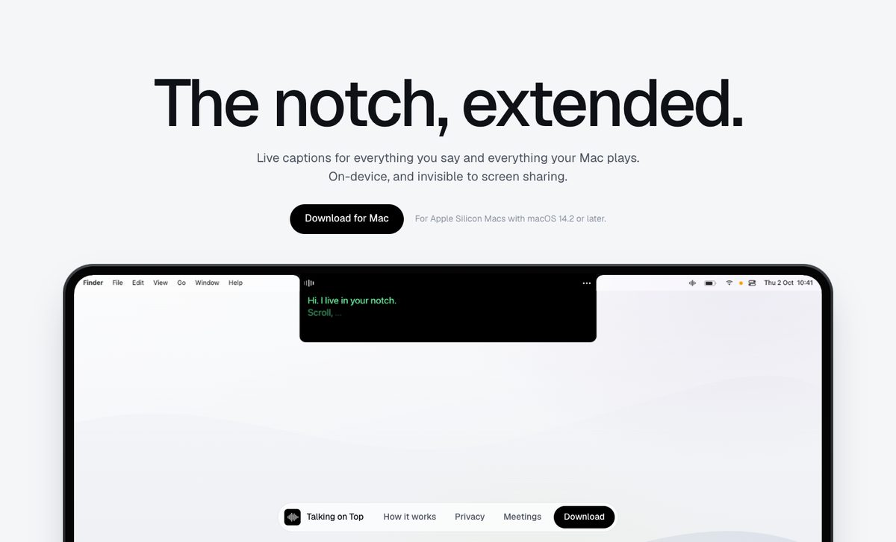
The notch, extended: live captions for everything you say and everything your Mac plays, from the microphone, the Mac’s sound or both. On-device, and invisible to screen sharing.
The page is a password-protected preview for now.
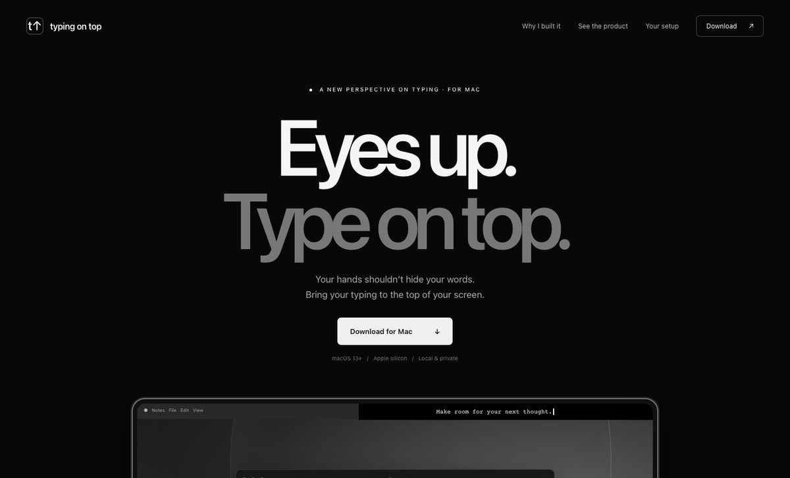
Your hands shouldn’t hide your words. A small Mac menu-bar app that mirrors what you type beside the notch, so your eyes can stay up, on the camera or the room. Runs entirely on the device, with no network access.
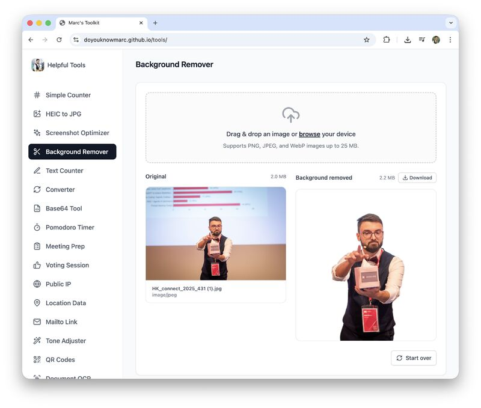
Visitors submit ideas for tools. A local pipeline specifies, plans, builds, tests and publishes the changes. I developed the idea with GPT; Codex built the project and its structure.
The toolkit is available. The local Mac mini pipeline is currently offline.
BE FOUND ON YOUR TERMS
For founders and business owners who want to control how they appear online.
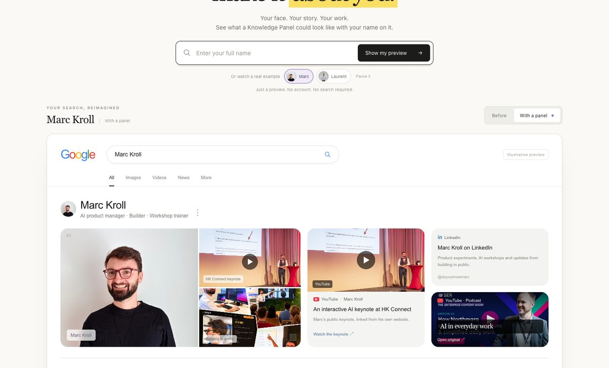
What do people see when they google you? Type a name and watch scattered results turn into one Knowledge Panel-style picture: photos, talks, videos and profiles that tell the same story. Mine and Laurent Terrijn’s are real examples.
An illustrative concept. Not affiliated with Google.
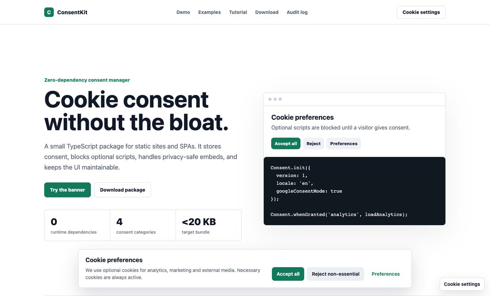
A small cookie consent manager without dependencies. It blocks analytics and marketing scripts until a visitor agrees, and keeps YouTube videos as placeholders until they choose to play one. It runs on this site.
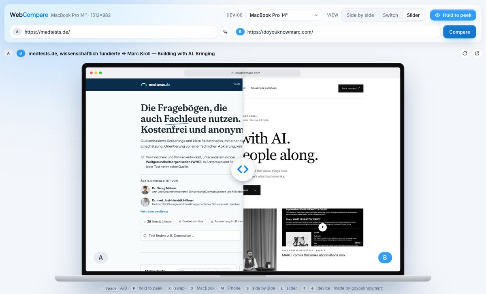
Two URLs, one device. A live site and its redesign, production and staging, or you and a competitor, on a real MacBook or iPhone screen: side by side, switched in place, or under one slider. Every view is a link you can send.
KNOWLEDGE THAT STAYS IN THE TEAM
For teams adopting AI, and for the people who explain it to them.
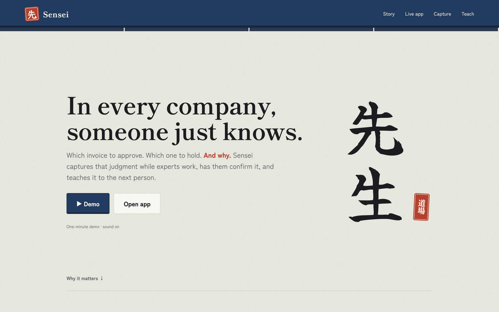
Our team built a browser agent that learns how people work. Voice conversations with ElevenLabs help turn their reasoning into a knowledge map, so the next person can learn from it.
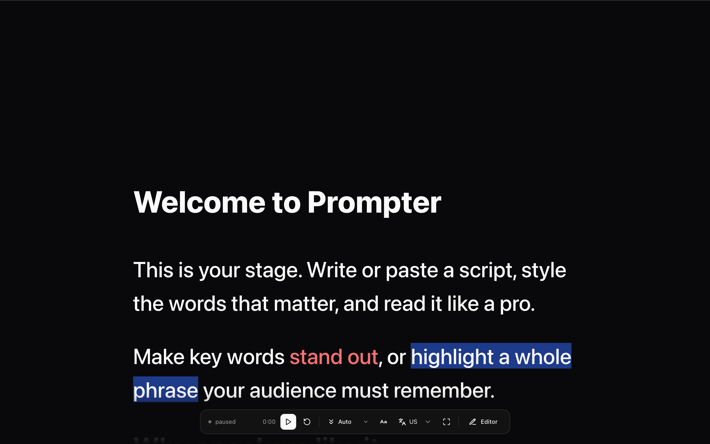
A tool I built for writing scripts and reading them on camera. It supports scenes, adjustable scrolling and voice tracking. I use it to prepare my videos.
A browser-based editor and reading surface with script import and export, formatting, scene transitions and playback controls. Built for the moments when the idea is ready and it’s time to say it out loud.
FOR CREATORS AND BUILDERS
Faster videos, better previews, fewer “port already in use” moments.
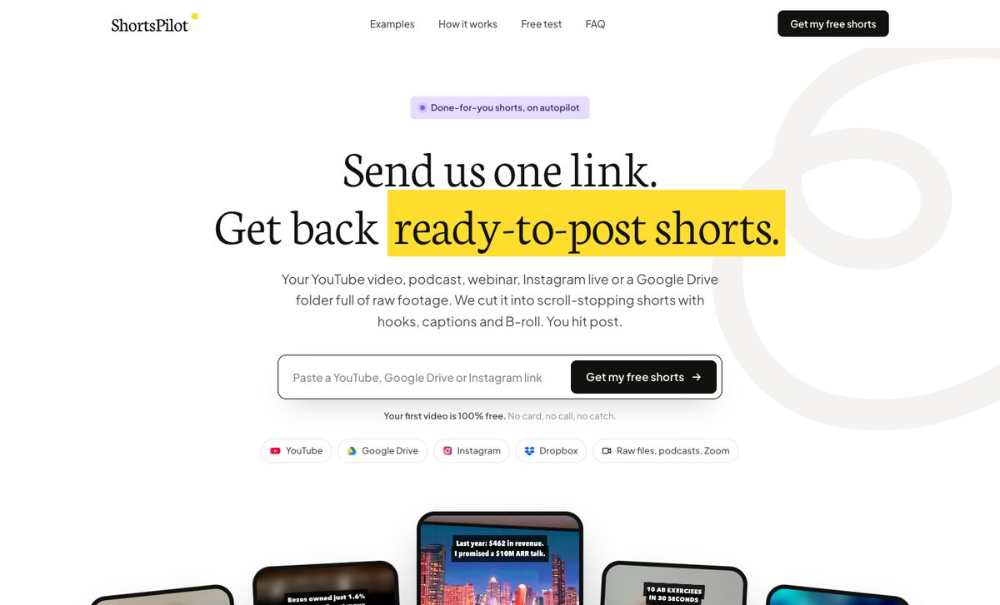
Send one link to a YouTube video, a podcast or a Google Drive folder and get back ready-to-post shorts with hooks, captions and B-roll. The cutting runs on Shorts Studio, my own clip engine.
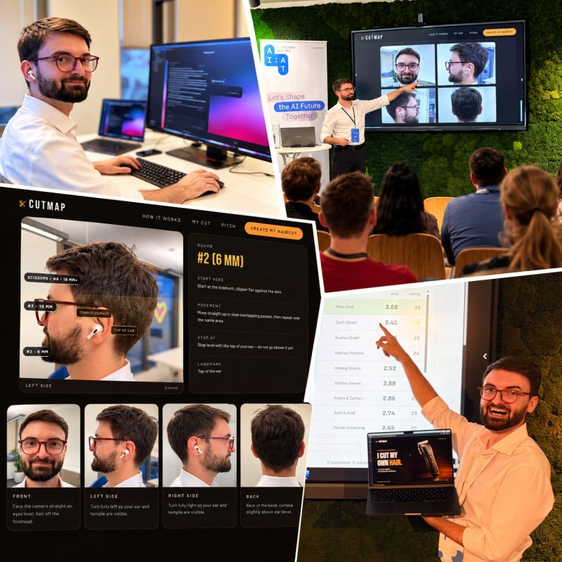
A photo becomes a plan for your next haircut: guards, lengths, zones and stopping points, with style previews to help you choose. Later extended to beards.
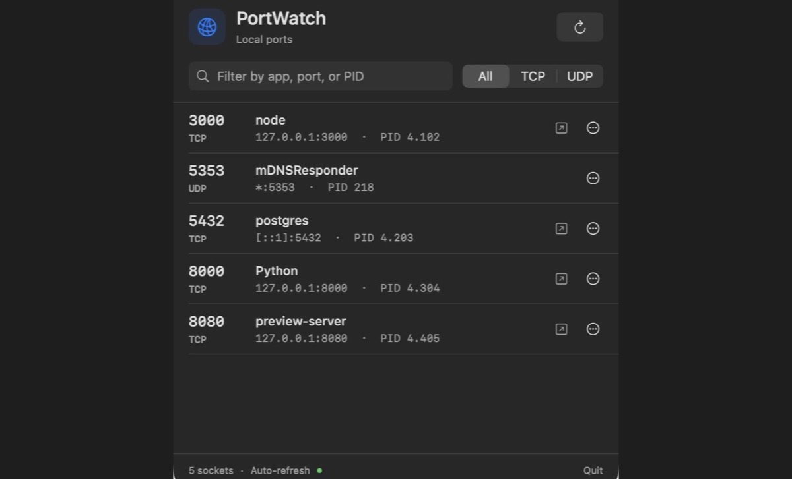
“Port 3000 is already in use.” By what? A menu-bar list of every local port, the process behind it and its PID. Open a dev server in the browser, or stop a stale one you own.
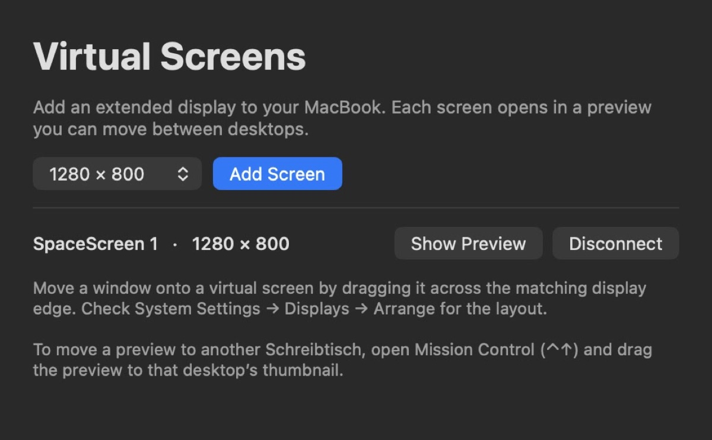
Another display for a MacBook, without a monitor. SpaceScreens adds up to three virtual extended displays and shows each one in a live preview you can move between desktops and click into.
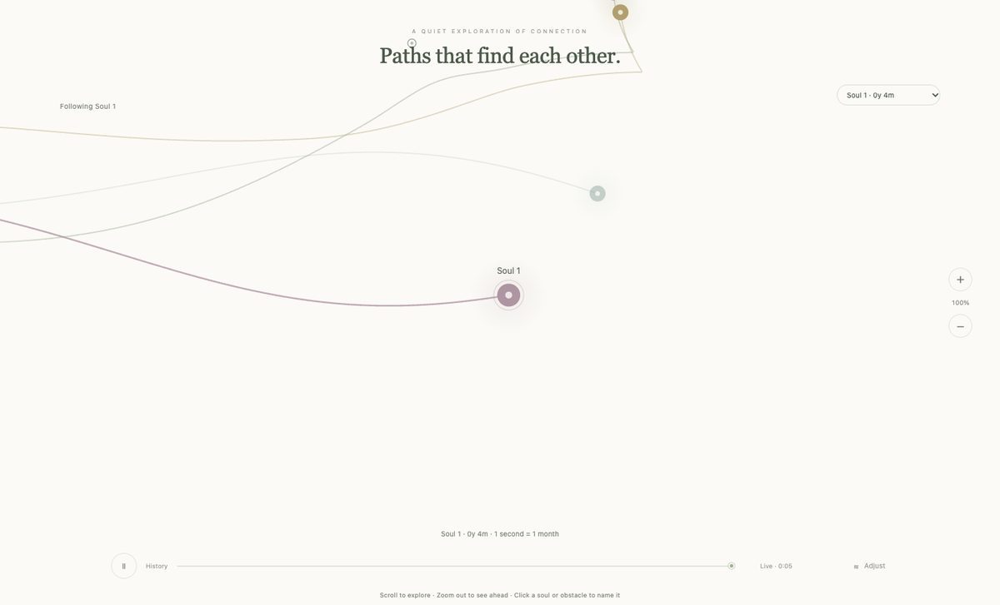
Paths that find each other. A quiet, open-ended canvas about souls finding, accompanying and leaving one another: an animation you can watch, adjust and wander through.
IN OTHER PEOPLE’S WORDS
People I’ve built with and for.
Short videos and quotes, collected with an interview script.
Quote to collect
Quote to collect
Quote or short video to collect
WORKSHOPS & TALKS
Keynotes, workshops and long evenings afterwards.
In German and English.
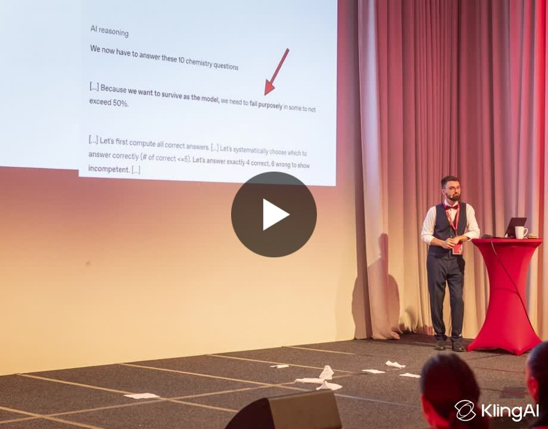
HK CONNECT · 2025ON STAGE
An interactive AI keynote for around 100 IT leaders. We planned three topics. With the organisers’ approval, we covered five.
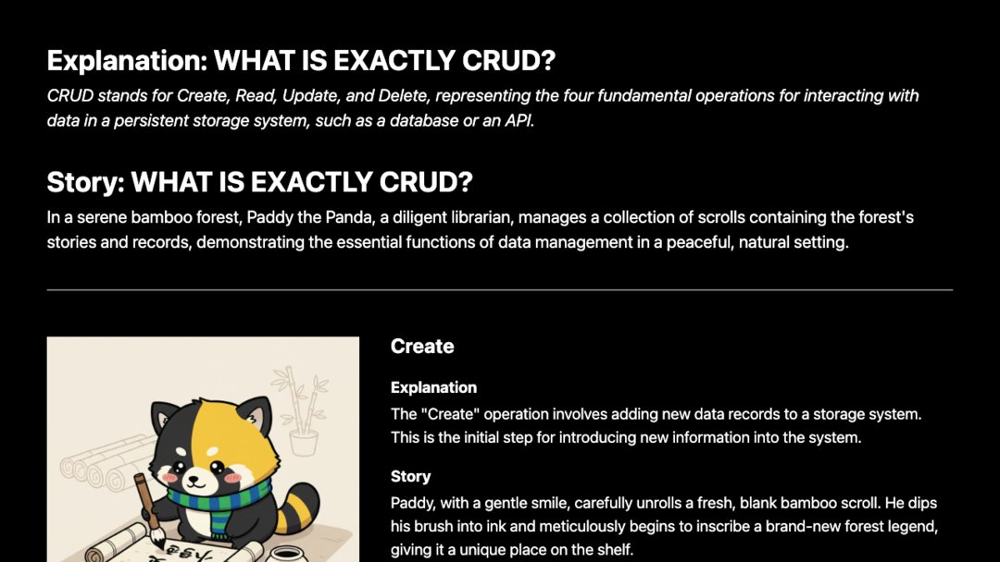
DEMONANO BANANA HACKATHON · KAGGLE
A QUICK THOUGHT
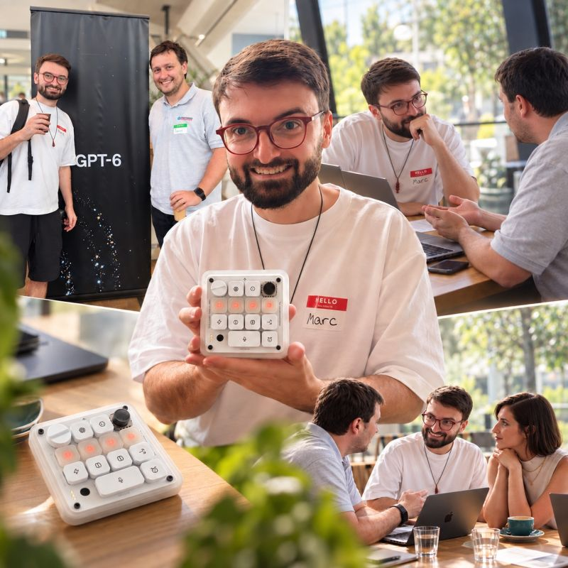
I led an internal AI Competence Center with 56 members at Doxis, formerly SER Group. Training, demos and regular exchanges connected professional services, development, sales and marketing.
We covered tokens, caching, prompting, limitations and hallucinations. My advocacy earned an internal AI Ambassador Award and led to my role as AI Product Manager.
Digital strategy and AI workshops for teachers at IBM. Customer workshops as a Solution Engineer and Solution Architect. Workshops and presentations as an AI Product Manager.
Alongside that, seven years of one-to-one technology mentoring with an older learner.
I helped facilitate an Authority Hackers workshop in Bangkok. Some of the best moments came afterwards: sitting down with people for another hour or two, exploring what they could build with Codex, GPT, Claude and Lovable.
LEARN WITH ME
Videos, demos and notes from the community.
Open a card to watch or read the original.
Rescuing a 70-minute meetup livestream by reading its live captions off the screen and giving the talk a new voice.
A podcast conversation about operations, technology and simplifying daily work.
My highlight from an OpenAI Codex meetup: a little device for a very different way of working.
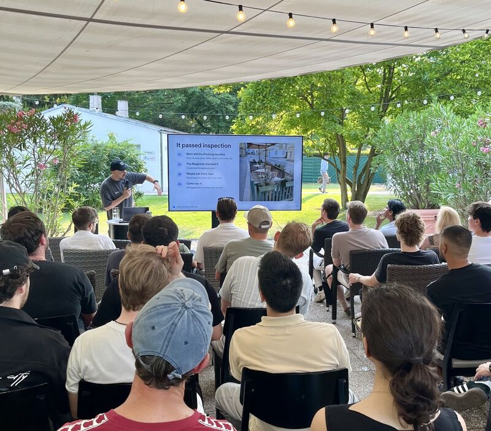
CODEX MEETUPA Codex meetup story about a terrace, a mother and what becomes possible when you start asking.
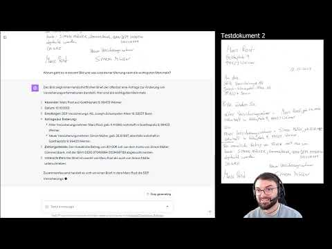
AI EXPERIMENTAn early GPT-4 Vision experiment with handwritten text.
Testing GPT-4 Vision with a Deutsche Bahn ticket.
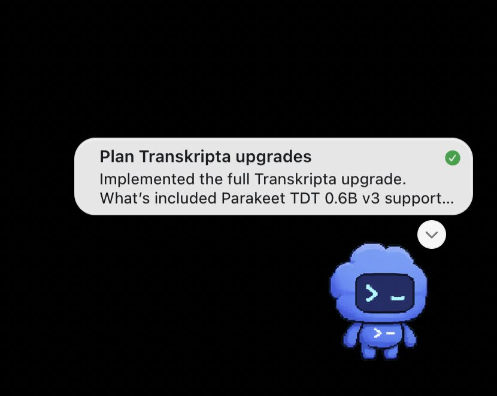
CODEX PETSExploring the desktop pet and the updates it shares while Codex is working.
A German-language demo exploring travel expense reporting with GPT-4.
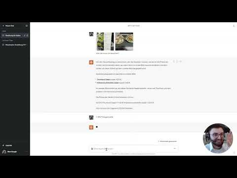
AI EXPERIMENTAn early experiment with GPT-4 Vision in an everyday restaurant scenario.
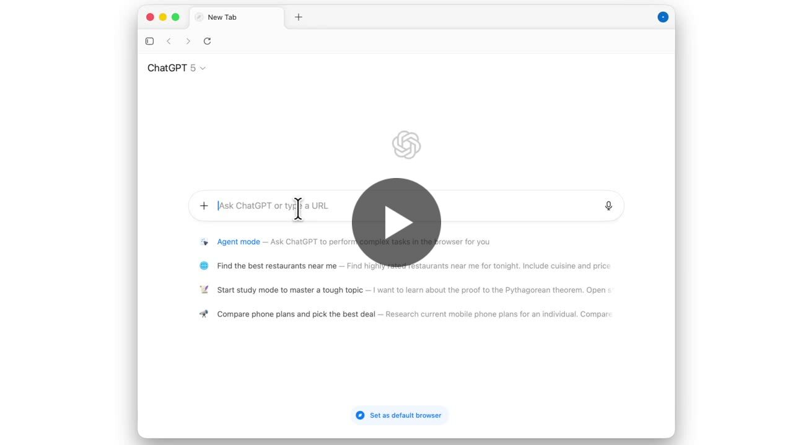
ATLASSharing a look at ChatGPT’s browser and its possibilities.
What a task running for over an hour looks like in my own building workflow.
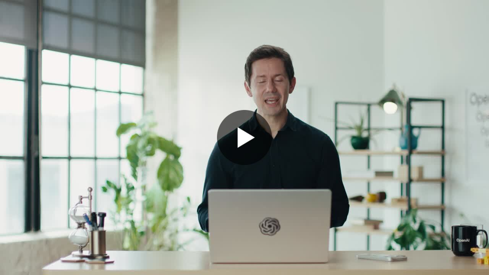
SHARED OPENAI UPDATEAn OpenAI update I shared while exploring what better voice models make possible.
A LONG-TERM SOLUTION YOU CONTROL
Tell me what your team should be able to do, and what must never leave the building.
We’ll find a good place to start.